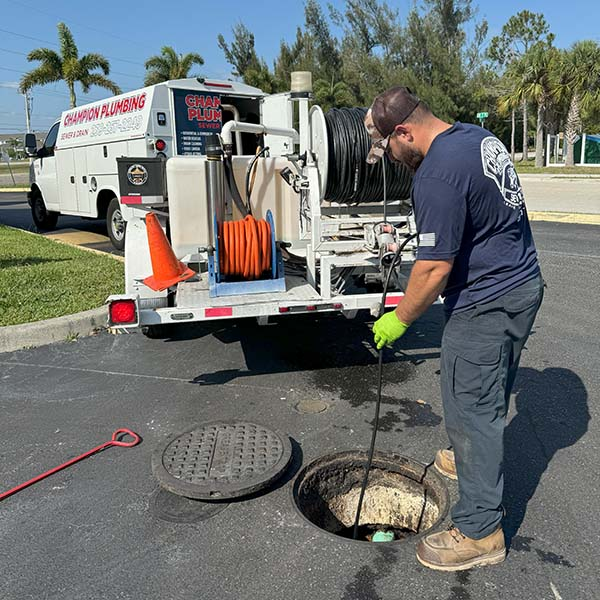
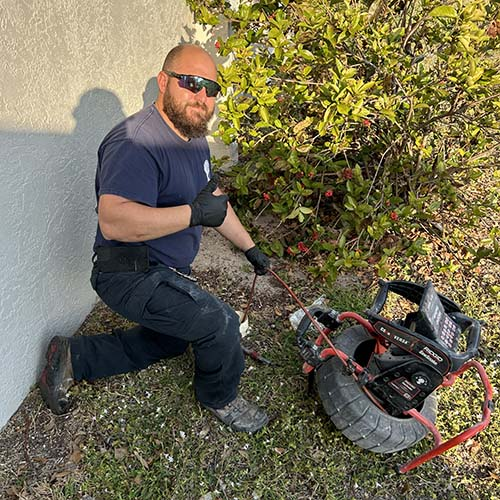
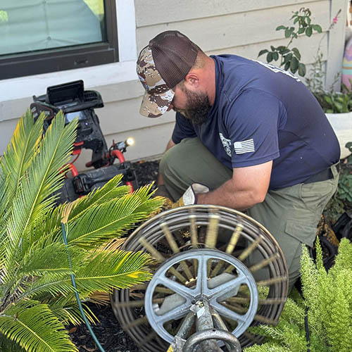
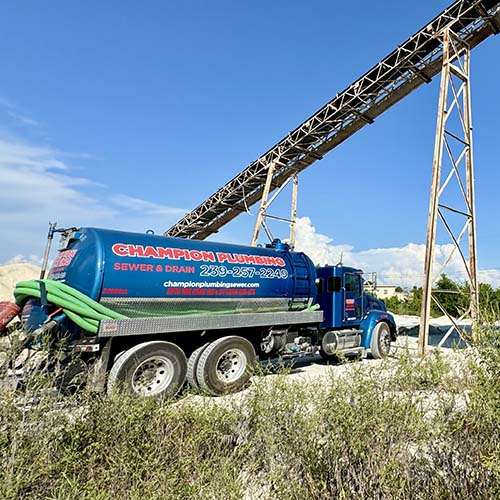
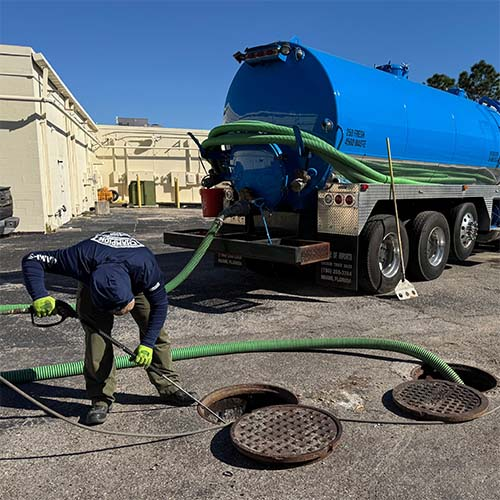
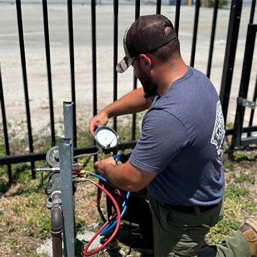
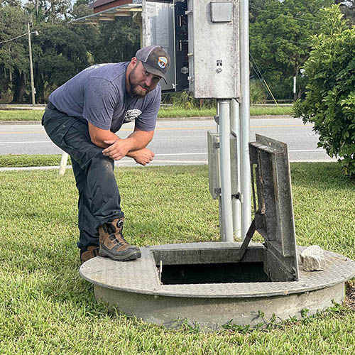
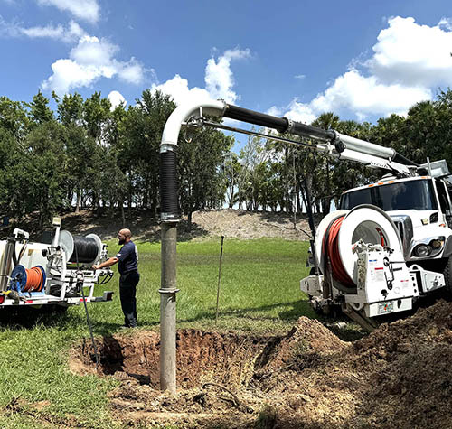
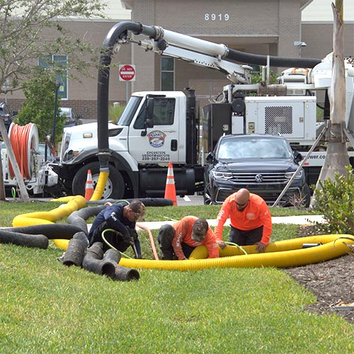

Camera, jetter, vac truck and excavation gear all under one roof — which means no subcontractor handoffs and no waiting on someone else's schedule.
Hydro jetting
Residential & commercial

A cable snake punches a hole through a clog. The line drains again, you think it's fixed, and six weeks later you're calling someone back. Jetting is different: water at up to 4,000 PSI scours the full inner diameter of the pipe, taking grease, scale and root hair off the wall with it.
It's powerful but controlled — safe for most residential lines, and the only realistic option for a commercial kitchen where years of grease have narrowed a 4-inch pipe to two.
Removes grease, soap scale and root intrusion
Restores full pipe diameter, not a channel
Camera verification before and after
Recommended annually for restaurants
Video camera inspection
Diagnostics & real estate

A high-resolution head on a flexible rod runs the length of the line, sending back live footage. You see exactly what we see — the offset joint, the belly holding water, the root ball at 40 feet.
This matters most in two situations: before you approve an expensive repair, and before you buy a house in an area with older clay or cast iron laterals. A camera run costs a fraction of what a surprise sewer replacement does.
Locate breaks, bellies and offsets precisely
Pre-purchase inspections for buyers
Footage provided for your records
Avoids exploratory digging
Sewer & drain cleaning
Residential & commercial

Kitchen line, main line, laundry standpipe, floor drain — if it's backing up, we find out why before we clear it. Half of repeat backups are a symptom of something structural, and clearing the blockage without finding the cause just resets the clock.
Main line and branch line clearing
Same-day service on active backups
Cause identified, not just the symptom
Multi-unit and commercial capable
Septic tank & ATU service
Residential & rural properties

Routine pumping, inspections, drain field trouble and repairs. We also service aerobic treatment units — the aerator systems a lot of companies in the area won't touch — including maintenance contracts and component replacement.
If you've bought a property and don't know when the tank was last serviced, that's the call to make before it makes itself.
Tank pumping and inspection
ATU maintenance and installs
Drain field diagnosis
Filter cleaning and lid repair
Grease trap cleaning
Restaurants & food service

Scheduled pump-outs with the manifests your health inspector wants to see. We work around service hours — early mornings, late nights, whatever keeps the kitchen open — and we keep the schedule so you don't have to think about it.
National chains and independent kitchens across Lee and Charlotte counties are on our rotation.
Interior and exterior traps
Compliance manifests provided
Off-hours service available
Recurring schedules we manage
Backflow testing & repair
Certified annual testing

Backflow preventers keep irrigation water, boiler water and industrial fluid from siphoning back into the drinking supply. Most jurisdictions require annual certified testing, and the paperwork has to be filed on time.
We test, repair or replace the assembly, and submit the report so you're not chasing a deadline.
Certified annual testing
Repair and assembly replacement
Reports filed with the authority
Reminders before your due date
Lift stations & wet wells
HOAs, plazas, commercial

Wet well cleaning, float and pump service, and wastewater management for properties that move sewage uphill. A failed lift station backs up an entire community — these are the jobs where a maintenance schedule genuinely pays for itself.
Wet well pump-out and cleaning
Pump and float diagnosis
Preventive maintenance contracts
Emergency response for failures
Hydro excavation
Utility-safe digging

Pressurised water breaks up the soil and a vacuum lifts it out. Nothing with an edge goes near the pipe, which is why this is the method of choice when you're digging next to gas, fibre or electrical.
Less disruption to landscaping too — a narrow, precise hole instead of a trench across the yard.
No blade contact with buried utilities
Precise potholing and daylighting
Minimal landscape damage
Works in tight-access areas
Stormwater & vac truck services
Municipal & commercial

Catch basins, storm drains and underground infrastructure cleared with high-pressure water and pneumatic suction. In Southwest Florida the time to find out a basin is packed with sand is not during the first big storm of the season.
Catch basin and storm drain cleaning
Debris removal and disposal
Pre-season inspection programs
Large-capacity vac truck
Not sure which one
Describe the symptom. We'll name the fix.
Gurgling drains, a smell in the yard, a slow kitchen line — tell us what you're seeing and we'll tell you what's likely going on.